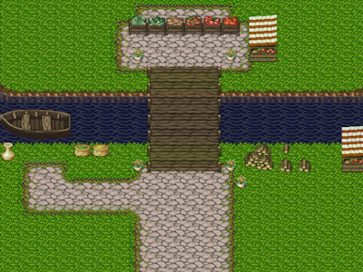
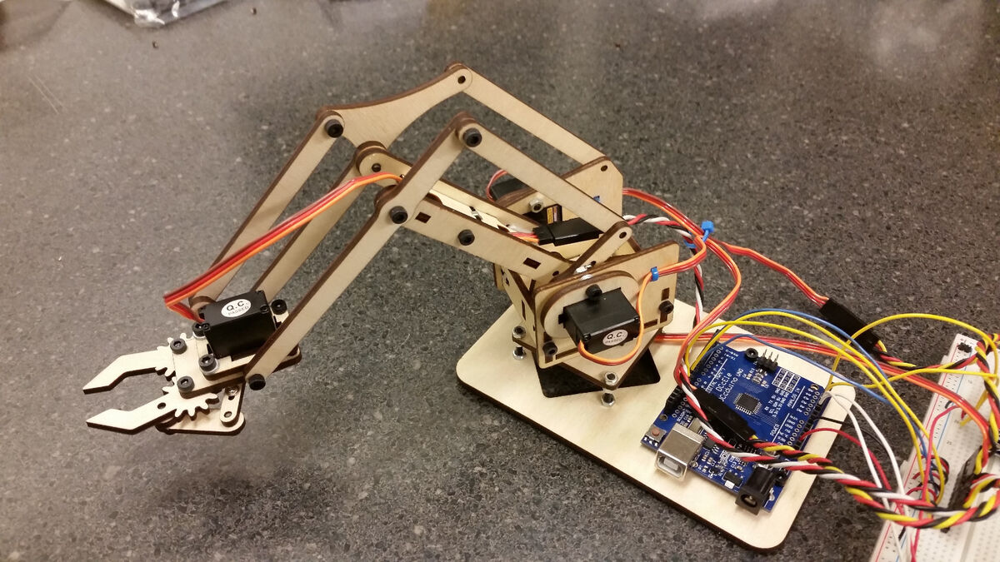
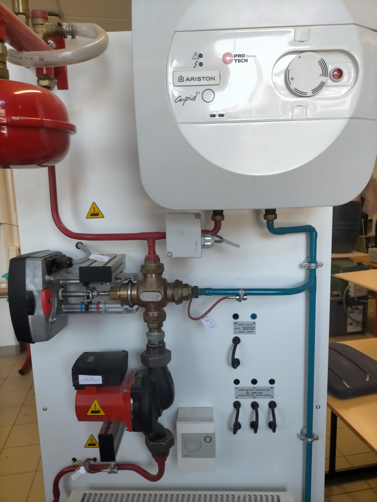
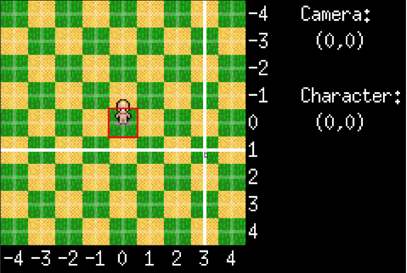

Stage d’observation chez Axes/SygmaLab
Stage d'observation d'une semaine chez Axes/SygmaLab, une entreprise proposant différents services informatiques.
Année : 2019
Stage de découverte chez Pôle Emploi
Stage de découverte d'une semaine au sein de la Direction Régionale Informatique de Pôle Emploi.
Année : 2020
Bénévolat au Don du Sang
Bénévole au Don du Sang pendant mes vacances scolaires entre 2013 et 2015. J'ai été chargé de l'accueil des donneurs.
Projets Personnels
Depuis le collège jusqu'au lycée, j'ai réalisé plusieurs projets personnels et certains ont été plus marquants que d'autres. En voici une petite sélection :
-

Initiation à la programmation avec Scratch en créant un petit jeu. Malheureusement, je n'ai pas continué en raison des limitations de Scratch.
-

Mon projet de fin d'année de Première a été la création d'un robot pour des combats de sumo, réalisé en 3D, construit selon certaines limitations techniques de taille et de poids, puis programmé. Nous avons remporté haut la main un petit tournoi en fin d'année.
-

Un autre de mes projets marquants a été la réalisation d'un bras articulé contrôlé par un joystick. Cela a été un défi technique car nous avons dû apprendre une nouvelle partie de Go qui nous avait été cachée jusqu'alors.
-

Projet de terminal : Nous avons créé un système de chauffage régulé automatiquement et contrôlable via une page web. Cela a été un énorme défi pour respecter les délais en raison de notre manque de connaissance sur certains matériels et de l'utilisation du serveur ainsi que des microcontrôleurs du chauffage.
-

Et enfin, cette année, nous avions pour projet de créer l'affichage et de gérer un petit jeu en utilisant un quadtree, puis de modifier notre jeu à notre guise.
Développement des Compétences
Ces expériences m'ont permis de développer mes compétences en matière de programmation, de gestion de projets et de collaboration en équipe. Elles m'ont également appris l'importance de la rigueur, de l'organisation et de la communication dans un environnement professionnel.
Mon Objectif de carrière
Mon objectif ultime est de contribuer de manière significative aux projets spatiaux. Je suis passionné par l'exploration de l'espace et je suis convaincu que ma formation en ingénierie et mes compétences en développement peuvent être des atouts précieux pour des missions spatiales. Je souhaite faire partie de l'équipe qui travaille dans l'ombre pour garantir le succès de chaque projet spatial, que ce soit en concevant des systèmes de contrôle, en développant des logiciels ou en assurant la gestion de projet. Contribuer à l'avancement de l'exploration spatiale serait pour moi une réalisation personnelle et professionnelle gratifiante.